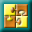

Add an SIS composite to a module
From a function block diagram, you can create an embedded composite by
dragging the Composite Block icon

Enter a name for the composite in the Block Name field. Use the radio buttons to select whether to create a new composite or to use an existing composite template.
If you select New, then click Next, you are prompted to select the number of inputs and outputs of the composite block. These inputs and outputs are what you use to wire the composite block to other blocks in the containing function block diagram. Inside the composite block, these become inputs and outputs of the composite's strategy.
All input and output parameters are visible on the composite block in the containing function block diagram. Click Finish and the block appears in Control Studio. Select Drill Down from the context menu to finish creating the composite.
The assistant limits the initial number of inputs and outputs you can create. However, you can add any number of inputs and outputs by adding Input Parameters and Output Parameters to the composite diagram in Control Studio.
If you select Existing, then click Next, you are prompted for the composite template location and name. You can use the Browse button to navigate to the SIS Composite Templates library and select a composite. After you have named a template, click Finish and the composite block appears in Control Studio. If necessary, you can select Drill Down from the context menu and modify this instance of the composite block.